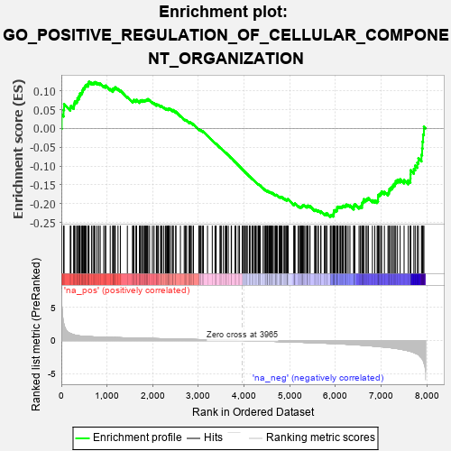
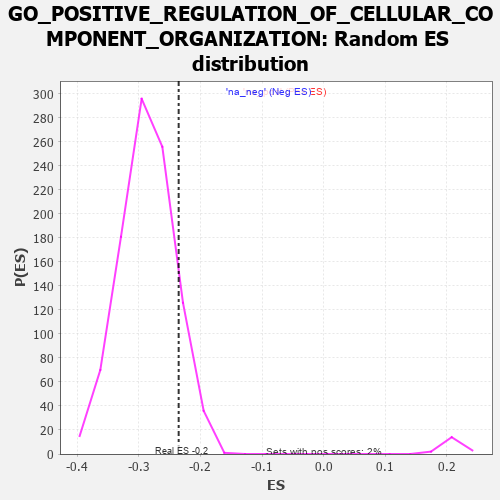

| | | Dataset | 7d |
| Phenotype | NoPhenotypeAvailable |
| Upregulated in class | na_neg |
| GeneSet | GO_POSITIVE_REGULATION_OF_CELLULAR_COMPONENT_ORGANIZATION |
| Enrichment Score (ES) | -0.23541336 |
| Normalized Enrichment Score (NES) | -0.8205693 |
| Nominal p-value | 0.8848114 |
| FDR q-value | 0.98380435 |
| FWER p-Value | 1.0 |
Table: GSEA Results Summary

Fig 1: Enrichment plot: GO_POSITIVE_REGULATION_OF_CELLULAR_COMPONENT_ORGANIZATION
Profile of the Running ES Score & Positions of GeneSet Members on the Rank Ordered List
| PROBE | GENE SYMBOL | GENE_TITLE | RANK IN GENE LIST | RANK METRIC SCORE | RUNNING ES | CORE ENRICHMENT | | 1 | SYT2 | | | 8 | 5.577 | 0.0368 | No |
| 2 | TGFB3 | | | 49 | 2.654 | 0.0497 | No |
| 3 | RAC2 | | | 60 | 2.442 | 0.0649 | No |
| 4 | TPPP3 | | | 195 | 1.079 | 0.0548 | No |
| 5 | RHOU | | | 210 | 1.031 | 0.0600 | No |
| 6 | ULK1 | | | 272 | 0.875 | 0.0580 | No |
| 7 | HGF | | | 276 | 0.870 | 0.0635 | No |
| 8 | SHOX2 | | | 288 | 0.842 | 0.0678 | No |
| 9 | FSCN1 | | | 297 | 0.830 | 0.0724 | No |
| 10 | DLL1 | | | 337 | 0.760 | 0.0724 | No |
| 11 | GSK3A | | | 351 | 0.745 | 0.0758 | No |
| 12 | TAPT1 | | | 354 | 0.743 | 0.0806 | No |
| 13 | MESD | | | 384 | 0.713 | 0.0817 | No |
| 14 | BAX | | | 387 | 0.711 | 0.0862 | No |
| 15 | NBN | | | 405 | 0.696 | 0.0887 | No |
| 16 | EED | | | 409 | 0.690 | 0.0930 | No |
| 17 | RRN3 | | | 438 | 0.667 | 0.0939 | No |
| 18 | ERCC1 | | | 453 | 0.660 | 0.0966 | No |
| 19 | CNOT6 | | | 462 | 0.655 | 0.1000 | No |
| 20 | LRP1 | | | 470 | 0.648 | 0.1035 | No |
| 21 | CDC20 | | | 480 | 0.644 | 0.1067 | No |
| 22 | MYOD1 | | | 504 | 0.628 | 0.1079 | No |
| 23 | CNOT2 | | | 514 | 0.625 | 0.1110 | No |
| 24 | HTRA2 | | | 527 | 0.621 | 0.1136 | No |
| 25 | SRF | | | 542 | 0.615 | 0.1160 | No |
| 26 | CCNB1 | | | 581 | 0.601 | 0.1151 | No |
| 27 | DDX56 | | | 584 | 0.600 | 0.1189 | No |
| 28 | FBXW8 | | | 601 | 0.594 | 0.1209 | No |
| 29 | DHX33 | | | 605 | 0.593 | 0.1245 | No |
| 30 | PARN | | | 660 | 0.572 | 0.1214 | No |
| 31 | MRE11 | | | 693 | 0.560 | 0.1210 | No |
| 32 | ID1 | | | 719 | 0.555 | 0.1215 | No |
| 33 | WDR61 | | | 734 | 0.549 | 0.1234 | No |
| 34 | RAD21 | | | 779 | 0.538 | 0.1213 | No |
| 35 | RPA1 | | | 817 | 0.527 | 0.1201 | No |
| 36 | RPA2 | | | 851 | 0.519 | 0.1193 | No |
| 37 | SF3A2 | | | 928 | 0.500 | 0.1128 | No |
| 38 | CTR9 | | | 964 | 0.492 | 0.1116 | No |
| 39 | DVL3 | | | 971 | 0.490 | 0.1141 | No |
| 40 | XPA | | | 1070 | 0.469 | 0.1045 | No |
| 41 | SRC | | | 1128 | 0.459 | 0.1002 | No |
| 42 | KMT2A | | | 1130 | 0.458 | 0.1032 | No |
| 43 | NCK2 | | | 1131 | 0.458 | 0.1063 | No |
| 44 | UBL5 | | | 1162 | 0.452 | 0.1055 | No |
| 45 | ERCC3 | | | 1173 | 0.451 | 0.1072 | No |
| 46 | TFDP1 | | | 1180 | 0.450 | 0.1095 | No |
| 47 | KAT7 | | | 1240 | 0.440 | 0.1048 | No |
| 48 | DKC1 | | | 1292 | 0.431 | 0.1011 | No |
| 49 | RBX1 | | | 1445 | 0.401 | 0.0840 | No |
| 50 | DDHD2 | | | 1557 | 0.381 | 0.0721 | No |
| 51 | FZD1 | | | 1574 | 0.379 | 0.0726 | No |
| 52 | CDC27 | | | 1585 | 0.377 | 0.0738 | No |
| 53 | PAF1 | | | 1588 | 0.376 | 0.0761 | No |
| 54 | DRG1 | | | 1633 | 0.368 | 0.0729 | No |
| 55 | DDB1 | | | 1642 | 0.366 | 0.0743 | No |
| 56 | TPPP | | | 1646 | 0.365 | 0.0764 | No |
| 57 | ERCC2 | | | 1712 | 0.354 | 0.0703 | No |
| 58 | TRAK1 | | | 1714 | 0.354 | 0.0726 | No |
| 59 | KMT2E | | | 1730 | 0.350 | 0.0730 | No |
| 60 | ESPL1 | | | 1734 | 0.349 | 0.0750 | No |
| 61 | LLPH | | | 1768 | 0.343 | 0.0730 | No |
| 62 | LRP5 | | | 1769 | 0.342 | 0.0754 | No |
| 63 | FNIP1 | | | 1798 | 0.338 | 0.0740 | No |
| 64 | FMR1 | | | 1816 | 0.334 | 0.0741 | No |
| 65 | UVRAG | | | 1831 | 0.332 | 0.0745 | No |
| 66 | RTF1 | | | 1844 | 0.329 | 0.0752 | No |
| 67 | SMAD4 | | | 1860 | 0.326 | 0.0754 | No |
| 68 | NUP62 | | | 1871 | 0.324 | 0.0763 | No |
| 69 | PAK3 | | | 1889 | 0.322 | 0.0763 | No |
| 70 | CUL3 | | | 1893 | 0.321 | 0.0781 | No |
| 71 | TASOR | | | 1931 | 0.316 | 0.0754 | No |
| 72 | ROR1 | | | 1993 | 0.306 | 0.0695 | No |
| 73 | JMJD4 | | | 2029 | 0.301 | 0.0670 | No |
| 74 | LRRC7 | | | 2080 | 0.294 | 0.0625 | No |
| 75 | SART3 | | | 2084 | 0.293 | 0.0641 | No |
| 76 | BMP7 | | | 2107 | 0.290 | 0.0632 | No |
| 77 | ISLR2 | | | 2124 | 0.287 | 0.0630 | No |
| 78 | MORC2 | | | 2171 | 0.281 | 0.0589 | No |
| 79 | SYK | | | 2186 | 0.278 | 0.0590 | No |
| 80 | C2CD5 | | | 2204 | 0.276 | 0.0587 | No |
| 81 | CREB1 | | | 2243 | 0.269 | 0.0555 | No |
| 82 | NSD3 | | | 2279 | 0.263 | 0.0527 | No |
| 83 | WASF1 | | | 2303 | 0.259 | 0.0515 | No |
| 84 | MED25 | | | 2320 | 0.257 | 0.0512 | No |
| 85 | ANO6 | | | 2339 | 0.255 | 0.0506 | No |
| 86 | FAF1 | | | 2340 | 0.255 | 0.0523 | No |
| 87 | BCAS3 | | | 2352 | 0.253 | 0.0526 | No |
| 88 | SIN3A | | | 2361 | 0.251 | 0.0532 | No |
| 89 | SAE1 | | | 2390 | 0.247 | 0.0513 | No |
| 90 | MET | | | 2430 | 0.240 | 0.0478 | No |
| 91 | FEN1 | | | 2446 | 0.237 | 0.0475 | No |
| 92 | KDM1A | | | 2447 | 0.237 | 0.0491 | No |
| 93 | CDT1 | | | 2505 | 0.226 | 0.0432 | No |
| 94 | HUWE1 | | | 2506 | 0.225 | 0.0447 | No |
| 95 | MPP7 | | | 2606 | 0.211 | 0.0332 | No |
| 96 | DSCAM | | | 2689 | 0.200 | 0.0239 | No |
| 97 | PHB2 | | | 2712 | 0.197 | 0.0224 | No |
| 98 | SLIT2 | | | 2724 | 0.195 | 0.0222 | No |
| 99 | LMAN1 | | | 2743 | 0.192 | 0.0212 | No |
| 100 | ATR | | | 2800 | 0.183 | 0.0151 | No |
| 101 | FER | | | 2803 | 0.183 | 0.0161 | No |
| 102 | BRK1 | | | 2805 | 0.183 | 0.0172 | No |
| 103 | BECN1 | | | 2828 | 0.179 | 0.0156 | No |
| 104 | CAND1 | | | 2845 | 0.177 | 0.0147 | No |
| 105 | PDCD5 | | | 2885 | 0.169 | 0.0108 | No |
| 106 | WDR5 | | | 2892 | 0.168 | 0.0111 | No |
| 107 | RTEL1 | | | 3010 | 0.148 | -0.0031 | No |
| 108 | BRD7 | | | 3018 | 0.147 | -0.0031 | No |
| 109 | WNT4 | | | 3023 | 0.146 | -0.0026 | No |
| 110 | PAN3 | | | 3054 | 0.142 | -0.0055 | No |
| 111 | FEZ1 | | | 3055 | 0.142 | -0.0046 | No |
| 112 | CUL4A | | | 3097 | 0.137 | -0.0090 | No |
| 113 | RREB1 | | | 3099 | 0.137 | -0.0082 | No |
| 114 | GPX1 | | | 3109 | 0.135 | -0.0084 | No |
| 115 | TWF1 | | | 3199 | 0.123 | -0.0192 | No |
| 116 | SMAD3 | | | 3303 | 0.105 | -0.0319 | No |
| 117 | FMN1 | | | 3363 | 0.095 | -0.0390 | No |
| 118 | GMFB | | | 3381 | 0.091 | -0.0406 | No |
| 119 | DDX3X | | | 3388 | 0.091 | -0.0407 | No |
| 120 | CNOT1 | | | 3473 | 0.081 | -0.0511 | No |
| 121 | CDK5 | | | 3480 | 0.080 | -0.0514 | No |
| 122 | FES | | | 3501 | 0.077 | -0.0535 | No |
| 123 | DMRT1 | | | 3546 | 0.068 | -0.0587 | No |
| 124 | MAPK3 | | | 3589 | 0.062 | -0.0638 | No |
| 125 | STK25 | | | 3602 | 0.059 | -0.0650 | No |
| 126 | CBL | | | 3621 | 0.056 | -0.0669 | No |
| 127 | FIS1 | | | 3654 | 0.051 | -0.0708 | No |
| 128 | HSF1 | | | 3718 | 0.039 | -0.0787 | No |
| 129 | CDC16 | | | 3724 | 0.038 | -0.0791 | No |
| 130 | SPAST | | | 3801 | 0.027 | -0.0888 | No |
| 131 | CHD1L | | | 3819 | 0.024 | -0.0909 | No |
| 132 | NEK2 | | | 3871 | 0.016 | -0.0974 | No |
| 133 | NIPBL | | | 3900 | 0.010 | -0.1010 | No |
| 134 | STX18 | | | 3962 | 0.000 | -0.1090 | No |
| 135 | IGF1R | | | 3970 | -0.002 | -0.1099 | No |
| 136 | VPS35 | | | 3989 | -0.006 | -0.1122 | No |
| 137 | PARP1 | | | 4014 | -0.010 | -0.1152 | No |
| 138 | TOR1A | | | 4030 | -0.013 | -0.1171 | No |
| 139 | TAL1 | | | 4064 | -0.018 | -0.1213 | No |
| 140 | ROBO2 | | | 4066 | -0.018 | -0.1213 | No |
| 141 | MTOR | | | 4114 | -0.025 | -0.1272 | No |
| 142 | ABL1 | | | 4125 | -0.027 | -0.1284 | No |
| 143 | PLCE1 | | | 4127 | -0.028 | -0.1283 | No |
| 144 | SYNJ1 | | | 4173 | -0.038 | -0.1339 | No |
| 145 | AP2B1 | | | 4185 | -0.039 | -0.1351 | No |
| 146 | VPS11 | | | 4202 | -0.041 | -0.1369 | No |
| 147 | ARPC2 | | | 4232 | -0.047 | -0.1404 | No |
| 148 | ARL2 | | | 4254 | -0.050 | -0.1428 | No |
| 149 | WNT11 | | | 4282 | -0.056 | -0.1459 | No |
| 150 | SYT17 | | | 4310 | -0.061 | -0.1490 | No |
| 151 | BAG4 | | | 4314 | -0.061 | -0.1490 | No |
| 152 | CTBP1 | | | 4323 | -0.064 | -0.1496 | No |
| 153 | OPA1 | | | 4330 | -0.065 | -0.1499 | No |
| 154 | FIG4 | | | 4348 | -0.068 | -0.1517 | No |
| 155 | ADRB2 | | | 4352 | -0.068 | -0.1516 | No |
| 156 | RALA | | | 4416 | -0.079 | -0.1593 | No |
| 157 | CDC37 | | | 4446 | -0.084 | -0.1625 | No |
| 158 | LRRK2 | | | 4467 | -0.087 | -0.1645 | No |
| 159 | EPS8 | | | 4474 | -0.088 | -0.1647 | No |
| 160 | HIP1 | | | 4485 | -0.092 | -0.1654 | No |
| 161 | MOB2 | | | 4504 | -0.095 | -0.1671 | No |
| 162 | ILK | | | 4510 | -0.096 | -0.1671 | No |
| 163 | SNW1 | | | 4514 | -0.096 | -0.1668 | No |
| 164 | NPTN | | | 4519 | -0.098 | -0.1667 | No |
| 165 | NTRK2 | | | 4543 | -0.104 | -0.1689 | No |
| 166 | ABI2 | | | 4554 | -0.106 | -0.1695 | No |
| 167 | APC | | | 4558 | -0.107 | -0.1692 | No |
| 168 | PNKP | | | 4572 | -0.111 | -0.1701 | No |
| 169 | VPS28 | | | 4582 | -0.114 | -0.1705 | No |
| 170 | SYT4 | | | 4590 | -0.116 | -0.1707 | No |
| 171 | GATA3 | | | 4614 | -0.120 | -0.1728 | No |
| 172 | DLG5 | | | 4619 | -0.121 | -0.1725 | No |
| 173 | RAB21 | | | 4620 | -0.122 | -0.1717 | No |
| 174 | ARPC3 | | | 4659 | -0.129 | -0.1758 | No |
| 175 | LIMK1 | | | 4684 | -0.136 | -0.1780 | No |
| 176 | PTK7 | | | 4687 | -0.136 | -0.1773 | No |
| 177 | CRBN | | | 4695 | -0.138 | -0.1773 | No |
| 178 | ARF6 | | | 4704 | -0.140 | -0.1774 | No |
| 179 | RAP1B | | | 4706 | -0.140 | -0.1766 | No |
| 180 | WASF3 | | | 4730 | -0.145 | -0.1786 | No |
| 181 | POC1A | | | 4768 | -0.151 | -0.1824 | No |
| 182 | WBP2 | | | 4780 | -0.153 | -0.1828 | No |
| 183 | CD151 | | | 4791 | -0.156 | -0.1830 | No |
| 184 | PLD6 | | | 4799 | -0.157 | -0.1829 | No |
| 185 | TPPP2 | | | 4800 | -0.157 | -0.1818 | No |
| 186 | FBXW7 | | | 4816 | -0.161 | -0.1827 | No |
| 187 | WDR1 | | | 4824 | -0.163 | -0.1825 | No |
| 188 | DLG1 | | | 4860 | -0.169 | -0.1859 | No |
| 189 | CLU | | | 4889 | -0.174 | -0.1884 | No |
| 190 | MARK2 | | | 4899 | -0.177 | -0.1883 | No |
| 191 | ATRX | | | 4929 | -0.184 | -0.1909 | No |
| 192 | FZD4 | | | 4940 | -0.186 | -0.1909 | No |
| 193 | EP300 | | | 4941 | -0.186 | -0.1896 | No |
| 194 | XRCC5 | | | 4946 | -0.187 | -0.1889 | No |
| 195 | ADCK1 | | | 4953 | -0.188 | -0.1884 | No |
| 196 | ARAP1 | | | 4963 | -0.191 | -0.1883 | No |
| 197 | DRD2 | | | 5088 | -0.221 | -0.2029 | No |
| 198 | ITSN1 | | | 5094 | -0.222 | -0.2021 | No |
| 199 | DDX11 | | | 5102 | -0.225 | -0.2015 | No |
| 200 | MMP9 | | | 5108 | -0.227 | -0.2006 | No |
| 201 | DOC2B | | | 5113 | -0.229 | -0.1995 | No |
| 202 | HDAC6 | | | 5183 | -0.244 | -0.2069 | No |
| 203 | ATM | | | 5210 | -0.249 | -0.2086 | No |
| 204 | GPSM2 | | | 5228 | -0.252 | -0.2091 | No |
| 205 | TNKS2 | | | 5239 | -0.254 | -0.2087 | No |
| 206 | SSH1 | | | 5254 | -0.258 | -0.2087 | No |
| 207 | PICK1 | | | 5265 | -0.263 | -0.2082 | No |
| 208 | RIMS2 | | | 5272 | -0.265 | -0.2072 | No |
| 209 | EPHA4 | | | 5273 | -0.265 | -0.2054 | No |
| 210 | ERCC5 | | | 5284 | -0.268 | -0.2049 | No |
| 211 | MAGI2 | | | 5295 | -0.269 | -0.2044 | No |
| 212 | RAD50 | | | 5314 | -0.276 | -0.2049 | No |
| 213 | EPHA1 | | | 5349 | -0.285 | -0.2074 | No |
| 214 | CPNE9 | | | 5374 | -0.289 | -0.2085 | No |
| 215 | FZD5 | | | 5386 | -0.292 | -0.2080 | No |
| 216 | DLG4 | | | 5388 | -0.293 | -0.2061 | No |
| 217 | PLK4 | | | 5397 | -0.295 | -0.2052 | No |
| 218 | CUX1 | | | 5437 | -0.304 | -0.2082 | No |
| 219 | IST1 | | | 5442 | -0.305 | -0.2066 | No |
| 220 | FGFR1 | | | 5543 | -0.332 | -0.2174 | No |
| 221 | EHD1 | | | 5560 | -0.336 | -0.2172 | No |
| 222 | SPHK1 | | | 5576 | -0.339 | -0.2169 | No |
| 223 | GNL3 | | | 5614 | -0.349 | -0.2193 | No |
| 224 | ROR2 | | | 5626 | -0.353 | -0.2184 | No |
| 225 | CASP8 | | | 5678 | -0.369 | -0.2225 | No |
| 226 | CD63 | | | 5680 | -0.370 | -0.2201 | No |
| 227 | CDC23 | | | 5756 | -0.394 | -0.2272 | No |
| 228 | VAMP7 | | | 5777 | -0.399 | -0.2271 | No |
| 229 | BBS4 | | | 5806 | -0.407 | -0.2280 | No |
| 230 | PAN2 | | | 5807 | -0.408 | -0.2252 | No |
| 231 | ARPC4 | | | 5886 | -0.430 | -0.2325 | Yes |
| 232 | VLDLR | | | 5898 | -0.434 | -0.2310 | Yes |
| 233 | STK11 | | | 5922 | -0.443 | -0.2310 | Yes |
| 234 | DCTN1 | | | 5950 | -0.454 | -0.2314 | Yes |
| 235 | SURF4 | | | 5951 | -0.455 | -0.2283 | Yes |
| 236 | ACTN2 | | | 5960 | -0.458 | -0.2262 | Yes |
| 237 | SH2B1 | | | 5963 | -0.459 | -0.2234 | Yes |
| 238 | CENPJ | | | 5968 | -0.460 | -0.2208 | Yes |
| 239 | TTBK1 | | | 5969 | -0.460 | -0.2177 | Yes |
| 240 | SYT9 | | | 5992 | -0.469 | -0.2173 | Yes |
| 241 | JMY | | | 6023 | -0.479 | -0.2180 | Yes |
| 242 | CKAP5 | | | 6032 | -0.482 | -0.2158 | Yes |
| 243 | RAC1 | | | 6036 | -0.484 | -0.2129 | Yes |
| 244 | PPT1 | | | 6038 | -0.485 | -0.2097 | Yes |
| 245 | EVL | | | 6052 | -0.490 | -0.2081 | Yes |
| 246 | DBNL | | | 6084 | -0.501 | -0.2087 | Yes |
| 247 | ATG13 | | | 6110 | -0.508 | -0.2085 | Yes |
| 248 | TNKS | | | 6138 | -0.516 | -0.2085 | Yes |
| 249 | ROCK1 | | | 6152 | -0.520 | -0.2067 | Yes |
| 250 | GRID2 | | | 6170 | -0.528 | -0.2053 | Yes |
| 251 | INSR | | | 6204 | -0.538 | -0.2060 | Yes |
| 252 | TPM1 | | | 6226 | -0.545 | -0.2050 | Yes |
| 253 | CDC42 | | | 6236 | -0.548 | -0.2025 | Yes |
| 254 | FLOT1 | | | 6276 | -0.564 | -0.2037 | Yes |
| 255 | MIEN1 | | | 6316 | -0.582 | -0.2049 | Yes |
| 256 | RALB | | | 6399 | -0.617 | -0.2114 | Yes |
| 257 | CDKL3 | | | 6401 | -0.618 | -0.2073 | Yes |
| 258 | UBE2N | | | 6407 | -0.621 | -0.2037 | Yes |
| 259 | PTPRD | | | 6423 | -0.629 | -0.2014 | Yes |
| 260 | TRPV4 | | | 6515 | -0.668 | -0.2087 | Yes |
| 261 | DDR2 | | | 6542 | -0.681 | -0.2075 | Yes |
| 262 | ROBO1 | | | 6577 | -0.699 | -0.2072 | Yes |
| 263 | CLN3 | | | 6580 | -0.699 | -0.2027 | Yes |
| 264 | ARF1 | | | 6583 | -0.701 | -0.1982 | Yes |
| 265 | TPR | | | 6597 | -0.709 | -0.1951 | Yes |
| 266 | ATL3 | | | 6619 | -0.723 | -0.1929 | Yes |
| 267 | SCYL2 | | | 6621 | -0.724 | -0.1881 | Yes |
| 268 | CLIP1 | | | 6667 | -0.746 | -0.1889 | Yes |
| 269 | PAK1 | | | 6691 | -0.757 | -0.1868 | Yes |
| 270 | GSK3B | | | 6719 | -0.768 | -0.1851 | Yes |
| 271 | ADAM9 | | | 6808 | -0.819 | -0.1910 | Yes |
| 272 | AHI1 | | | 6860 | -0.848 | -0.1919 | Yes |
| 273 | ESPN | | | 6911 | -0.873 | -0.1925 | Yes |
| 274 | LRP8 | | | 6931 | -0.889 | -0.1889 | Yes |
| 275 | MIB1 | | | 6932 | -0.890 | -0.1829 | Yes |
| 276 | SNX3 | | | 6934 | -0.893 | -0.1769 | Yes |
| 277 | DNM1L | | | 6963 | -0.913 | -0.1744 | Yes |
| 278 | NPHP4 | | | 6991 | -0.931 | -0.1716 | Yes |
| 279 | DZIP1 | | | 7009 | -0.940 | -0.1674 | Yes |
| 280 | CPNE5 | | | 7070 | -0.977 | -0.1686 | Yes |
| 281 | SYT1 | | | 7148 | -1.033 | -0.1716 | Yes |
| 282 | AR | | | 7169 | -1.046 | -0.1671 | Yes |
| 283 | PTPRJ | | | 7180 | -1.054 | -0.1613 | Yes |
| 284 | MFN2 | | | 7208 | -1.081 | -0.1574 | Yes |
| 285 | ABCA1 | | | 7243 | -1.113 | -0.1543 | Yes |
| 286 | CDK9 | | | 7266 | -1.138 | -0.1495 | Yes |
| 287 | MSX2 | | | 7299 | -1.171 | -0.1457 | Yes |
| 288 | GRN | | | 7319 | -1.194 | -0.1400 | Yes |
| 289 | WDR35 | | | 7357 | -1.225 | -0.1365 | Yes |
| 290 | NEK7 | | | 7415 | -1.285 | -0.1352 | Yes |
| 291 | DDHD1 | | | 7501 | -1.397 | -0.1368 | Yes |
| 292 | SAXO1 | | | 7592 | -1.543 | -0.1381 | Yes |
| 293 | CROCC | | | 7639 | -1.628 | -0.1330 | Yes |
| 294 | MNS1 | | | 7642 | -1.633 | -0.1222 | Yes |
| 295 | MCU | | | 7644 | -1.637 | -0.1112 | Yes |
| 296 | BOK | | | 7715 | -1.817 | -0.1080 | Yes |
| 297 | RNF31 | | | 7744 | -1.895 | -0.0988 | Yes |
| 298 | NPHP1 | | | 7791 | -2.041 | -0.0909 | Yes |
| 299 | ANK1 | | | 7815 | -2.146 | -0.0793 | Yes |
| 300 | FYN | | | 7881 | -2.622 | -0.0700 | Yes |
| 301 | CAV3 | | | 7896 | -2.739 | -0.0532 | Yes |
| 302 | PLCB1 | | | 7904 | -2.841 | -0.0348 | Yes |
| 303 | ASIC2 | | | 7917 | -2.995 | -0.0160 | Yes |
| 304 | ARRB1 | | | 7935 | -3.377 | 0.0047 | Yes |
Table: GSEA details [plain text format]

Fig 2: GO_POSITIVE_REGULATION_OF_CELLULAR_COMPONENT_ORGANIZATION: Random ES distribution
Gene set null distribution of ES for GO_POSITIVE_REGULATION_OF_CELLULAR_COMPONENT_ORGANIZATION